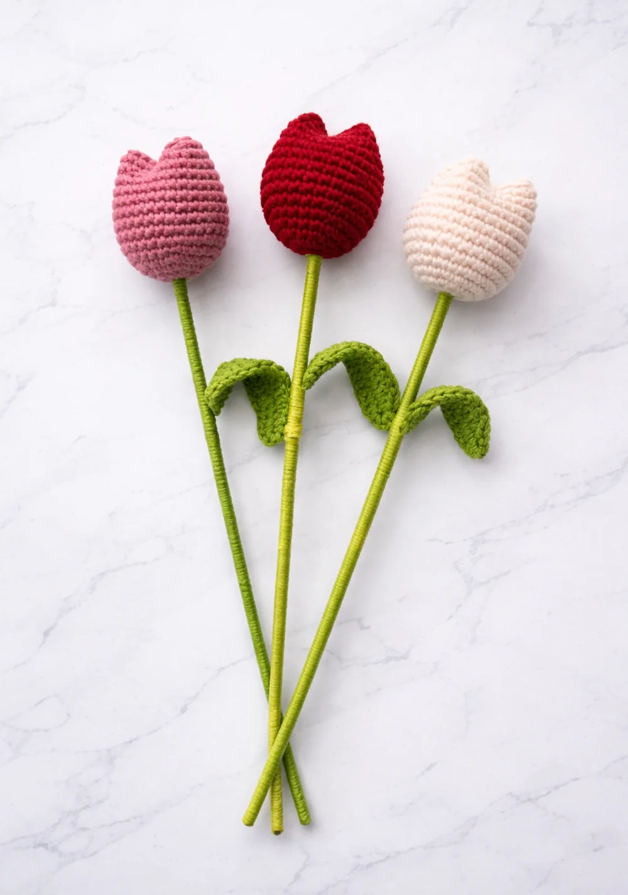
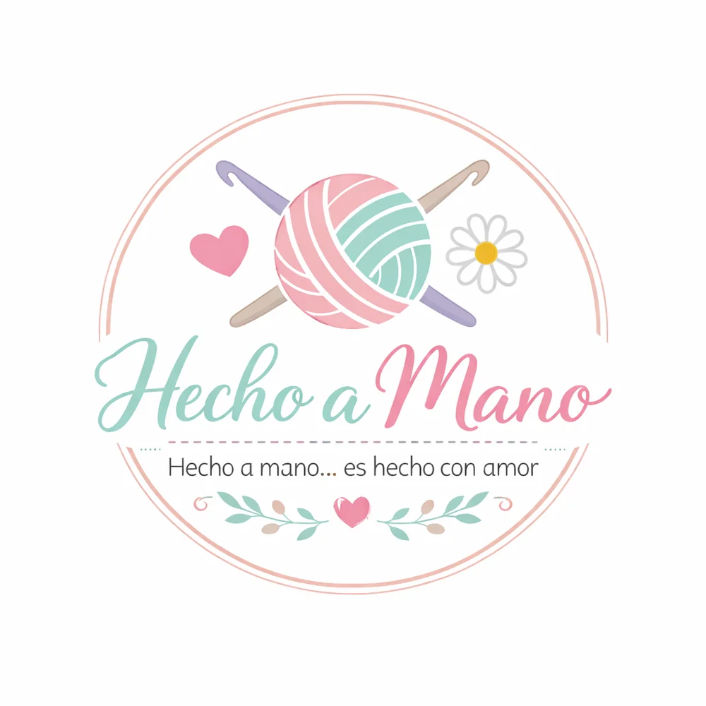

Elige lo que te enamora
Explora las colecciones o comparte una idea que quieras hacer realidad.
Ver coleccionesCrochet con corazón · Honduras
Tejemos detalles que abrazan: flores que no se marchitan, personajes que enamoran y regalos tan únicos como tú.
Hecho con calma. Pensado para alguien especial.

Encuentra tu próximo favorito
Cada pieza tiene su encanto. ¿Cuál cuenta tu historia?
Imagina. Nosotros lo tejemos.
¿Un personaje favorito, tu mascota o un regalo con tus colores? Nos encanta convertir tus ideas en algo que puedas abrazar.
Se abrirá WhatsApp con tu idea lista para compartir.
De nuestras manos a las tuyas
Pedir tu pieza es sencillo. Te acompañamos en cada detalle.
Explora las colecciones o comparte una idea que quieras hacer realidad.
Ver coleccionesEscríbenos por WhatsApp para consultar colores, personalización y disponibilidad.
EscríbenosConfirmamos contigo el precio, el tiempo de elaboración y la forma de entrega antes de empezar.

Con cariño, Hecho a ManoUn poquito sobre nosotros
Damos vida a la creatividad con el arte de tejer. Cada puntada lleva tiempo, dedicación y la ilusión de crear algo que signifique mucho para alguien.
Desde amigurumis hasta tus propias ideas o mascotas, nos encanta crear piezas únicas por encargo. También compartimos este arte en nuestras clases de crochet.
Quiero saber de las clasesAntes de decir hola
Y si tienes otra duda, estamos a un mensaje de distancia.
¡Sí! Cuéntanos tu idea, colores favoritos o personaje por WhatsApp. Revisaremos los detalles contigo y te compartiremos una cotización.
Entra a una colección y elige “Pedir por WhatsApp” en la pieza que te guste. Se abrirá un chat con el producto en el mensaje. Tú lo revisas y lo envías.
El tiempo de elaboración depende de la pieza y de la personalización. Escríbenos para confirmar disponibilidad, tiempo y opciones de entrega antes de realizar tu pedido.
Sí, ofrecemos clases para aprender y desarrollar tu creatividad. Consulta por WhatsApp los horarios, requisitos y disponibilidad.